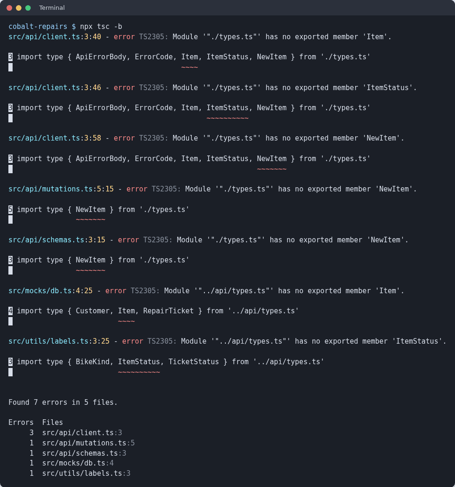
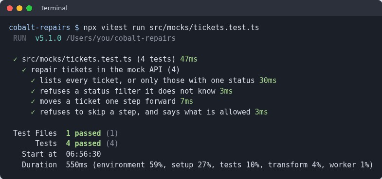

🎓 Lesson 11.1: Final Project
Thirty-three lessons ago you wrote your first interface for a beach cleanup. Since then Shoreline Crew HQ has grown into a typed, tested, split and deployed app, and every step came with instructions. This lesson takes the instructions away and keeps everything else. You choose a client, plan an app of your own with the same care, and build its first milestone the way professionals start: with the types. The rest you build over the following weeks, one milestone at a time, until it has a public link, a green CI run and a peer review behind it.
🎯 Learning Objectives
By the end of this lesson, you will be able to:
- Choose and size a client brief for a React + TypeScript app, and write a charter that says what is in scope and what is not
- Plan the whole app on one worksheet, starting from your journal: domain types, routes, data layer, state placement, forms, tests by level, accessibility, a performance budget and the launch path
- Write an app's domain types first, with unions and complete
Recordtables, and let the type checker find every place a change has to reach - Start from the final-project kit's starter and build Milestone 1: your types, sample data and a mock API with its rules and tests, committed with CI green
- Turn about 25 hours of work into milestones with honest estimates, and define "done" with a rubric and a peer review
📦 The final-project kit
Download final-project-kit.zip: the planning worksheet, seven client briefs, the rubric and the peer-review checklist as Markdown files, and a starter project made from Shoreline Crew HQ's tooling with the Shoreline Crew taken out. Shoreline Crew HQ's own code doesn't change in this lesson, so there is no lesson-34 code download.
In This Lesson
🧭 Your Turn to Lead
Every lesson so far gave you two things at once: a concept, and the exact steps to apply it to Shoreline Crew HQ. The final project keeps the concepts and takes away the steps. You get a client brief instead of a lesson plan, and you make the decisions: what the types are, which screens exist, where each piece of state lives, what gets tested at which level, and how the world gets to see it. That is the job.
💡 Mental model: from crew member to crew lead
On a Shoreline Crew Saturday, volunteers follow the plan: meet at the stairs, take a grabber, work the tide line. The crew lead arrived an hour earlier with a clipboard: the map of the beach, the list of who comes, where the bags go, what to do if it rains. Nobody admires the clipboard, and the morning only works because of it. Your planning worksheet is that clipboard, and your domain types are the map at the top of it. You will change both as you learn, and that is their point.
Why this matters: Shoreline Crew HQ shows you can follow a course. An app you planned, typed, tested and shipped from a brief, with a public link, a green CI run and a written plan, shows you can do the work. It is the project you will talk about in interviews, and the worksheet is the same thinking that turns a vague request ("we need an app for the shop") into a plan someone can price and approve.
You are not starting from nothing. Almost every lesson ended with a "your own project" line, starting with the app you described in your very first journal entry. Your journal holds about thirty answers you wrote while each idea was fresh: the five values in Lesson 2.1, the address list in Lesson 6.1, the state table in Lesson 7.3, the three journeys in Lesson 9.3. Today you collect them.
📋 Choose a Client Brief
The kit's briefs.md has seven briefs from fictional clients, each sized for this course's stack: one single-page app from the starter, a mock API that runs in the browser for the demo, and about 25 hours of work. Each brief lists the people who use the app, the must-haves, the data the client already has, what is out of scope, and a "Notes" line on the decisions that make it interesting:
| Brief | Client | The interesting decision |
|---|---|---|
| Cobalt Cycle Repairs | a two-mechanic bike workshop | a status order the server enforces; money in cents; a parts field array (the worked example) |
| Larkspur Tool Library | a neighborhood tool-lending library | "available" derived from loans; date rules in one schema; overlapping loans as a 409 |
| Quillmark Studio Board | a design studio's project board | optimistic moves with rollback; moving cards from the keyboard |
| Brightleaf Community Pantry | a food pantry with pickup slots | a long intake form: one page or steps? Slot capacity on the server |
| Kestrel Sailing Club | a club with its own weather station | outside data that is unknown until checked; units as client state; a lazy chart |
| Saltmarsh Bakery | a bakery taking weekly preorders | a basket in client state, an order on the server, a price the server works out |
| Marigold Reading Circle | a library's reading challenge | derived statistics; a rating union; hidden reviews that never reach members |
Or your own idea. An app you actually want to exist is the best final project of all, as long as it fits the same frame: 2 to 4 domain types with at least one union of literal types; 5 to 9 routes including a detail page, a not-found page and a list whose search or filter lives in the address; at least one form with a schema and a rule only the server can check; at least one change saved through a mutation; a demo build on a free static host (or a real API with its hosting and cost written down). No real payments, no passwords you store yourself, no live chat: those need systems beyond this course, and a capstone that is 80 % unfinished checkout teaches less than a finished catalog. Demo sign-in with sample accounts, as in the HQ, is fine.
Choosing what not to build is a professional skill, not a compromise. Every brief has an "out of scope" line, and writing yours down protects you and the client.
🗺️ Plan Before You Build
The kit's worksheet.md has thirteen sections in the order the course taught them, and each one names the lessons whose journal notes feed it:
| Worksheet section | Start from your journal notes of |
|---|---|
| 0. Charter: client, people, must-haves, out of scope | 1.1 (the app you described, your "I built…" sentence), 1.2 (folder name, first screen), today's brief |
1. Domain types first: interfaces, unions and their Record tables, request types, computed values, outside data and its checks, helper function types | 2.1 (inferred, annotated, unknown), 2.2 (main objects), 2.3 (helper types), 2.4 (data sources, new and edit types), 3.2 (the main card), 3.3 (statuses and labels) |
| 2. Routes and screens: who may open each, data first, loading/error/empty text, lazy or not | 4.1 (three messages per screen), 4.4 (boundaries), 6.1 (address list), 6.2 (shareable views), 6.3 (who and what data) |
| 3. Data layer: mock, public or real API; endpoints; query keys; changes | 2.4, 4.1, 7.1 (keys and staleTime), 7.2 (changes: wait or optimistic), 10.2 (where the data lives) |
| 4. State placement | 3.4 (state per screen and derived values), 5.1 (actions union), 5.2 (app-wide values), 6.2, 7.3 (the state table) |
| 5. Forms | 3.5 (values, result, messages), 8.1 (input and output types, server-only rules), 8.2 (line items, files, steps) |
| 6. Components, design and hooks | 3.1 (shell and colors), 3.2, 3.6 (tokens), 4.2 (hooks to extract), 5.4 (patterns) |
| 7. Accessibility | 3.6 (five-line checklist), 4.3 (focus cases), 9.3 (what only a browser proves) |
| 8. Performance budget | 5.3 (what to measure), 10.1 (visitors and lazy screens) |
| 9. Tests by level | 9.1 (three test names), 9.2 (what must not happen), 9.3 (three journeys) |
| 10. Environments, secrets and launch | 2.4 (public or secret), 10.2 (environments, demo honesty, launch checklist) |
| 11. Milestones and time log · 12. Risks and questions | today |
You don't need every section final today. The charter, the domain types, the routes, the data layer and the launch path come first, because Milestones 1 and 2 are built on them; every other section gets a first line from your journal or a "decide in Milestone N" note, so no gap stays invisible. Aim for answers you could defend, not perfect ones. A wrong answer you wrote down gets fixed; an answer you never wrote down turns into a surprise in week three.
🔷 Types First: a Worked Example
Everything downstream (the mock API, the guards, the queries, the forms, the tests) depends on the domain types, and they are the most expensive thing to change once screens are built on them. So they come first, before any component. Here is the worked example, Cobalt Cycle Repairs, written into the starter's src/api/types.ts below the example Item (which stays until Milestone 2):
// ---------------------------------------------------------------- Cobalt Cycle Repairs (Milestone 1)
// The example Item stays until Milestone 2 replaces its pages; then it goes.
/** A day in the shop's calendar: "YYYY-MM-DD" */
export type DateString = string
/** Money as a whole number of cents: 1999 is $19.99, and sums never drift */
export type Cents = number
export type BikeKind = 'road' | 'mountain' | 'city' | 'cargo' | 'kids'
/** A repair ticket moves through these steps, in this order (the API refuses skipped steps) */
export type TicketStatus = 'received' | 'diagnosed' | 'waiting-for-parts' | 'ready' | 'collected'
export interface Customer {
id: string
name: string
phone: string
/** Some customers only give a phone number */
email: string | null
}
/** One line of the parts list: a field array in the ticket form (Lesson 8.2) */
export interface PartLine {
partName: string
quantity: number
unitPrice: Cents
}
export interface RepairTicket {
id: string
customerId: string
bike: { kind: BikeKind; description: string }
problem: string
status: TicketStatus
parts: PartLine[]
labor: Cents
/** null until the mechanic has looked at the bike and promised a day */
promisedFor: DateString | null
createdAt: Timestamp
updatedAt: Timestamp
}
// NOT stored, computed when needed: the total (parts + labor) and "overdue" (promisedFor before today)
/** The counter form: the API adds id, status 'received', no parts, no labor and the timestamps */
export type NewTicket = Pick<RepairTicket, 'customerId' | 'bike' | 'problem'>
/** What the workshop may change on an open ticket */
export type TicketChanges = Partial<Pick<RepairTicket, 'status' | 'parts' | 'labor' | 'promisedFor'>>Notice the decisions, each one from an earlier lesson, now made without help:
- Unions, not strings (Lesson 2.2):
TicketStatusandBikeKindlist every value, so a typo like'redy'is a type error, not a ticket nobody can find. nullfor "known to be empty":promisedForisnulluntil a mechanic promises a day;emailisnullfor customers who only give a phone number. An optional property (?) would mean "not sent", which is a different thing.- Money in whole cents:
Centsis anumberthe type name explains. Common Mistakes shows why decimals don't add up. - Computed, never stored: the total and "overdue" are not properties. A stored total disagrees with its parts the first time someone edits a line; "overdue" changes at midnight without anyone touching the ticket.
- Request types built from the domain type (Lesson 2.4):
NewTicketandTicketChangesusePickandPartial, so a renamed property is renamed everywhere.
Every union then gets a label table, and the starter writes those as Records (Lesson 3.3), because a Record<TicketStatus, string> must list every status:
export const ticketStatusLabels: Record<TicketStatus, string> = {
received: 'Received',
diagnosed: 'Diagnosed',
'waiting-for-parts': 'Waiting for parts',
ready: 'Ready to collect',
collected: 'Collected',
}The starter uses the same trick in its API client for the error codes. When the worked example added 'conflict' to ErrorCode (the workshop's API answers 409 to a skipped step), npx tsc -b pointed straight at the one place that had to learn about it:
Expected output (shortened, from npx tsc -b)
src/api/client.ts:34:7 - error TS2741: Property 'conflict' is missing in type '{ validation_failed: true; not_found: true; server_error: true; }' but required in type 'Record<ErrorCode, true>'.
34 const errorCodes: Record<ErrorCode, true> = {
~~~~~~~~~~That is what "types first" buys: you change the description once, and the compiler gives you the list of places to follow. Had the client kept its error codes in an array (const errorCodes: ErrorCode[] = [...]), it would have compiled happily and quietly treated every 409 as an unknown error.
🧰 The Starter and What Carries Over
You don't start from an empty folder. The kit's starter is Shoreline Crew HQ's tooling at the end of Lesson 10.2 with the Shoreline Crew taken out, and one example kind of thing, an Item, so that every check has something to check:
| Keep as it is | Adapt to your brief | Replace |
|---|---|---|
tsconfig*.json, .oxlintrc.json, vite.config.ts (React Compiler, vendor and forms groups, demo mode), playwright.config.ts, src/test/, src/mocks/browser.ts, main.tsx, ErrorPage, NotFoundPage, LoadStatus, FieldError, public/_redirects and _headers, .github/workflows/ci.yml | config.ts (your app's name), index.css tokens, AppLayout (your navigation), DemoBanner (sample accounts if you add sign-in), api/client.ts (a guard per type), queries.ts, mutations.ts, schemas.ts, utils/labels.ts | api/types.ts's Item, mocks/db.ts's sample data, mocks/handlers.ts's routes, the three Item pages and their tests, e2e/smoke.spec.ts's journeys |
The one new idea is where the data comes from. Most briefs have no back end you can deploy for free, so the starter's API is a mock API in src/mocks: sample data in db.ts, and MSW handlers in handlers.ts that answer like a real server, rules and status codes included. It is Lesson 10.2's demo idea from the first day: the same handlers answer in the tests (through setupServer), in npm run dev:demo and in the demo build (through MSW's service worker), so the three can never disagree. If your app has a real API, npm run dev and VITE_API_URL work exactly as in the HQ.
What the starter leaves out on purpose: sign-in and guards, Zustand, loaders, the polymorphic Button, Tabs, Dialog. They belong to the HQ's brief. When yours needs one, copy it from your shoreline-hq folder and rename it; the worksheet's state placement table tells you which.

Checked for the course in a fresh copy of the starter with CI=true and Node.js 24.22.2, as a GitHub runner would see it: npm ci, npx tsc -b, npm run lint -- --deny-warnings, 11 Vitest tests, both builds and the 4 Playwright tests (2 journeys and axe in light and dark) all passed, and actionlint 1.7.12 accepted the workflow. The workflow is Lesson 10.2's without the working-directory lines: the starter is meant to be a repository of its own, with package.json at the top. Its end-to-end job tests the demo build, because that is the version the world sees.
⏱️ Milestones and Honest Time
⚠️ Honest time: this project is bigger than this lesson
The 150 minutes at the top cover reading this lesson, filling in the first sections of the worksheet and building Milestone 1. The whole project is about 25 more hours, usually 20 to 30 depending on the brief and how much you polish, best spread over three to five weeks. That is normal for a capstone, and the milestones below turn it into evenings. In a class, your instructor sets the schedule; on your own, put the milestones in your calendar today.
| # | Milestone | Done when | Typical hours |
|---|---|---|---|
| 0 | Plan | charter, types, routes, data layer and launch path decided; every other section has a first line or a milestone | 1 (today) |
| 1 | Types first | your types and label tables, 6 to 12 sample records per type (one awkward), your mock API's routes and rules with tests; checks green; first push with CI green | 2–3 (started today) |
| 2 | Walking skeleton | routes and layout, a list and a detail page from your types, loading, error, empty and not-found states; Item deleted; a draft deploy of the demo | 3–5 |
| 3 | Features | every must-have works: forms with schemas and server errors, mutations, address state, client state where the table says | 6–9 |
| 4 | Accessibility and performance | axe 0 at both widths and themes, a keyboard walk, focus cases, lazy routes, a budget measured | 2–3 |
| 5 | Tests and CI | the tests in worksheet section 9 pass, lint at 0 warnings, both CI jobs green | 3–4 |
| 6 | Launch | production deploy, the live launch checklist ticked, a README with the link, a screenshot and how to run it | 1–2 |
| 7 | Peer review | your review given, theirs received, every point fixed or answered | 2–3 |
💡 Mental model: the walking skeleton is a practice run
Before the big Saturday, a crew lead walks the route once with an empty bag: parking, stairs, meeting point, the spot for the scales. Nothing gets cleaned, and that walk is when they find out the stairs are closed. Milestone 2 is that walk: the thinnest app that goes all the way from your types to a public draft address. It looks plain, and it proves every joint works (types, mock API, routes, build, host) while changes are still cheap.
Milestone 2 starts with a satisfying moment the worked example already tried: delete the example Item from types.ts, run npx tsc -b, and the type checker hands you the to-do list:

Two habits keep the estimates honest. Log your real hours per milestone in the worksheet's time log: comparing them with your estimate is the cheapest estimating lesson there is. And when a milestone runs 50 % over, stop and re-plan instead of pushing on: cut a nice-to-have, simplify a feature, move it to "later". Professionals do exactly that with a client's budget. Cut features before you cut checks.
✅ What "Done" Means: the Rubric and the Review
"Done" needs a definition before you start, or the project is never finished, only abandoned. The kit's rubric.md scores ten rows from 0 (not yet) to 2 (strong): Plan, Types and data, Routes and screens, States and messages, Server data and state, Forms, Accessibility and performance, Tests and CI, Launch and security, Review and reflection. The project is complete when no row is "not yet"; the "strong" column is what makes it a portfolio piece. You score yourself, your peer scores you, and in a class your instructor uses the same rubric. Most rows are written as things you can check ("npx tsc -b clean", "axe 0 violations at 1280 and 390 px in light and dark", "both CI jobs green"), so you can score yourself honestly before anyone else does.
In Milestone 7 you swap projects with a classmate or a developer friend. The kit's peer-review.md takes about 90 minutes and needs only the live link, read access to the repository and the worksheet: read the plan (15 minutes), run Lesson 10.2's live launch checklist on their link (20), use it like the people in the brief (20), clone it and run npm ci, npx tsc -b, npm run lint and npx vitest run (25), and write the feedback (10). Good feedback is specific and kind: "On /tickets at 390 px, the status filter is cut off; steps: open the page on a phone, scroll to the filters" helps; "the filters are buggy" doesn't. As the author, answer every point with a fix or a sentence on why you are leaving it. A reviewer who needs your passwords or your .env.local has found something.
⚠️ Common Mistakes
The first three are planning mistakes, the ones that cost the most hours. The last two were reproduced with the starter while this lesson was checked.
⚠️ Components before types
Opening HomePage.tsx first feels like progress. Two weeks later the card wants a property the API doesn't send, the form sends a shape the API refuses, and the "status" is three different strings in three files. Types first takes an hour and saves those weeks: every later file is checked against one description of the data.
⚠️ Everything on localhost until the last week
The classic capstone failure: three weeks of features, then launch week reveals a deep link that 404s, a build that only works with your .env.local, and a CI run nobody ever saw green. Each is a ten-minute fix in week one and a crisis in week four. That is why Milestone 1 ends with a green CI run and Milestone 2 with a draft deploy.
⚠️ Scope that grows while you aren't looking
"While I'm at it, real accounts" is how a 25-hour project becomes a 70-hour one that never ships. Every new idea goes into the charter's "nice later" list first. It comes into the project only if something of the same size goes out, and the time log says you can afford it.
⚠️ The form's schema reused as the API's schema
"One schema" (Lesson 8.1) is tempting to stretch to the mock API too. But a form schema describes what the fields hold, and its output is what the app sends. The starter's form turns an empty Notes box into null, so the request body has notes: null, and a schema that expects the box's text refuses it. Measured by making the mock API check requests with newItemSchema: saving an item without notes failed, and the test that expected the server's "name taken" message found this under the Notes field instead:
Expected output (shortened, from npx vitest run src/pages/NewItemPage.test.tsx)
× shows the server rule under the field when the name is taken 1093ms
...
FAIL src/pages/NewItemPage.test.tsx > the New item form > shows the server rule under the field when the name is taken
...
Invalid input: expected string, received nullThe fix in the starter: share the rules, not the schema. Each field's rule is written once, the form schema adds the transform, and the request schema accepts what the form sends, checked against the domain type with z.ZodType<NewItem>:
// Rules as Zod schemas (Lesson 8.1): one schema gives a form its checks AND its types.
import { z } from 'zod'
import type { NewItem } from './types.ts'
// Each rule is written once and used twice: by the form, and by the (mock) API
const name = z
.string()
.trim()
.min(3, { error: 'Give it a name of at least 3 characters.' })
.max(80, { error: 'Keep the name under 80 characters.' })
const notes = z.string().trim().max(500, { error: 'Keep the notes under 500 characters.' })
/** The form: every field holds text, and an empty Notes box becomes null on the way out */
export const newItemSchema = z.object({
name,
notes: notes.transform((value) => (value === '' ? null : value)),
})
/** What the form's fields hold (all text) */
export type NewItemFormValues = z.input<typeof newItemSchema>
/** What the form hands on after its checks: exactly a NewItem */
export type NewItemFormData = z.output<typeof newItemSchema>
/** The request body POST /api/items accepts: a NewItem, checked again by the server */
export const newItemBodySchema: z.ZodType<NewItem> = z.object({ name, notes: notes.nullable() })⚠️ Money as decimal numbers
JavaScript numbers are binary fractions, and most decimal prices can't be stored exactly. Measured with node -p "1.10 + 2.20":
Expected output
3.3000000000000003A basket total that shows 3.3000000000000003, or a comparison total === 3.3 that is false, is a bug report waiting to happen. Store whole cents (110 + 220 is exactly 330), give the type a name (Cents) so nobody mixes them up, and format only for display (Intl.NumberFormat with style: 'currency', dividing by 100).
🛠️ Project: Plan It, and Build Milestone 1
Today you choose a brief, write the plan, and build the first milestone in a new project made from the kit's starter. Keep your journal open next to the worksheet: most answers are already in it. The worked example's code above is there to compare with, not to copy; your brief has its own types.
Step 1: Choose your brief and write the charter (12 min)
- Download final-project-kit.zip and unzip it outside your
shorelinecourse folder, for example next to it. - Read
briefs.md. Choose one brief, or write your own idea as a brief and check it against the size rules in Choose a Client Brief. - Copy the
starterfolder to its own place and give it your project's name (the worked example usescobalt-repairs). Copyworksheet.mdinto it, next topackage.json, and fill in section 0, the charter. Be strict with "out of scope": write at least one feature you are deliberately not building, and why.
Step 2: The rest of the plan, from your journal (16 min)
Go through your journal's "your own project" notes lesson by lesson and copy each answer into the worksheet section that Plan Before You Build names. Three sections must be settled before Milestone 2, so write them properly now: section 2 (routes and screens), section 3 (where the data comes from, your endpoints and query keys) and section 10 (environments, what the demo banner will say, the host). For sections 4 to 9, one line from your journal or "decide in Milestone N" (state and forms in 3, accessibility and performance in 4, tests in 5) is enough today. Add your first risks to section 12.
Step 3: The starter runs, and its checks pass (10 min)
Open your project folder in VS Code and a terminal in it:
npm ci
npm run dev:demoOpen http://localhost:5173: the demo banner, three example items, an item page, the New item form and "Page not found" at any unknown address. Stop the server (Ctrl+C) and run the checks the way CI will:
npx tsc -b
npm run lint
npx vitest runExpected output (shortened, from npx vitest run)
Test Files 3 passed (3)
Tests 11 passed (11)npx tsc -b prints nothing (no errors), and the lint ends with Found 0 warnings and 0 errors. Now make it yours: "name" in package.json, appName in src/config.ts and the <title> in index.html. The starter's README.md lists every script and file.
Step 4: Milestone 1a, your domain types (15 min)
Copy worksheet section 1 into code. In src/api/types.ts, add your types below the example Item, under a comment line with your project's name, as the worked example did in Types First. Keeping Item for now means the example pages still compile, so every check stays green while you work; Milestone 2 deletes it.
- An
interfaceper main type; unions for every status, category and role;nullfor "known to be empty". - Request types with
Pick,OmitandPartial; a comment for each value you will compute instead of storing. - A
Recordlabel table per union insrc/utils/labels.ts, and any rule table (like Cobalt's next steps) in a small file of its own. - New error codes (a
409needs'conflict') go inErrorCode;npx tsc -bthen tells you to add them to the client's table.
Run npx tsc -b after each type. Red underlines here are the cheapest feedback you will ever get on this project.
Step 5: Milestone 1b, sample data and a mock API with its rules (19 min)
In src/mocks/db.ts, add 6 to 12 sample records per type, with every field filled the way the client's real data would be, and one awkward on purpose. The worked example's awkward ticket has no parts, no labor and no promised day:
{
// The awkward one: just in, nothing known yet (no parts, no labor, no promised day)
id: 't3',
customerId: 'c3',
bike: { kind: 'kids', description: "Red 20-inch kids' bike" },
problem: 'Wobbles.',
status: 'received',
parts: [],
labor: 0,
promisedFor: null,
createdAt: '2026-05-06T16:55:00.000Z',
updatedAt: '2026-05-06T16:55:00.000Z',
},Add a getter for each list and a line in reset(), as the starter does for items. Then add your routes to src/mocks/handlers.ts: a list, a detail with a 404, and the one rule only a server can be trusted with. The worked example's rule is the workshop's status order:
// Milestone 1 changes the status only; parts, labor and the promised day come with Milestone 3's form
http.patch(`${baseUrl}/api/tickets/:ticketId`, async ({ params, request }) => {
const ticket = db.tickets.find((candidate) => candidate.id === params.ticketId)
if (!ticket) {
return problem(404, 'not_found', 'There is no ticket with this id.')
}
const body: unknown = await request.json().catch(() => null)
const status = typeof body === 'object' && body !== null && 'status' in body ? body.status : undefined
if (!isTicketStatus(status)) {
return problem(400, 'validation_failed', 'Some fields need attention.', { status: ['Choose a status.'] })
}
// The rule only the server can be trusted with: a ticket moves one step at a time
const allowed = nextSteps[ticket.status]
if (!allowed.includes(status)) {
const options = allowed.map((next) => ticketStatusLabels[next]).join(' or ') || 'nothing (it is closed)'
return problem(409, 'conflict', `A ${ticketStatusLabels[ticket.status]} ticket can only move to ${options}.`)
}
return HttpResponse.json(db.saveTicket({ ...ticket, status, updatedAt: new Date().toISOString() }))
}),- The body arrives as
unknownand is narrowed withtypeofandinbefore use: a mock API that trusts its input teaches your app bad habits. nextStepsis aRecord<TicketStatus, readonly TicketStatus[]>insrc/utils/tickets.ts, next toisTicketStatus: add a status and TypeScript asks where it fits.db.saveTicketreplaces the ticket with a changed copy. The handler never edits the saved object (Lesson 3.4's rule, on the server side).
Last, a test file next to the handlers (the starter's handlers.test.ts shows the pattern: fetch the API's address, and MSW answers). Test the rule from both sides, allowed and refused:
it('refuses to skip a step, and says what is allowed', async () => {
const response = await patchTicket('t3', { status: 'ready' })
expect(response.status).toBe(409)
expect(await response.json()).toEqual({
error: 'conflict',
message: 'A Received ticket can only move to Diagnosed.',
})
})
Expected output (shortened, from npx vitest run src/mocks/tickets.test.ts)
✓ src/mocks/tickets.test.ts (4 tests) 51ms
✓ repair tickets in the mock API (4)
✓ lists every ticket, or only those with one status 31ms
✓ refuses a status filter it does not know 4ms
✓ moves a ticket one step forward 7ms
✓ refuses to skip a step, and says what is allowed 4ms
...
Test Files 1 passed (1)
Tests 4 passed (4)Then run npx tsc -b, npm run lint and npx vitest run once more: all green (the worked example: 15 tests).
Step 6: First commit, first green run, and the calendar (10 min)
The project folder is the whole repository: package.json and .github sit side by side at its top. As in Lesson 10.2:
git init -b main
git add .
git status
git commit -m "Milestone 1: domain types, sample data and the mock API"Read git status first: no node_modules, no dist, no .env.local (the starter's .gitignore covers them). Create an empty repository on GitHub, push with the two commands GitHub shows, and open the Actions tab: "Types, lint, unit tests and builds", then "End-to-end tests". The first run takes a few minutes. When both are green, write the actual time for Milestone 1 in the worksheet's time log, your estimates for Milestones 2 to 7, put them in your calendar, and ask someone to be your peer reviewer with a date for Milestone 7.
✅ Project Completion Checklist
- You chose a brief (or wrote your own within the size rules), and your charter names at least one thing that is out of scope, with a reason
- Worksheet sections 0 to 3, 10 and 11 are filled in; every other section has a first line or a "decide in Milestone N" note
- Your domain types, label tables and request types are in the project, below the example
Item - Your mock API answers with 6 to 12 sample records per type (one awkward), returns a
404for a missing record, and keeps one server-only rule, with tests for it npx tsc -b,npm run lintandnpx vitest runare green, and so is the first CI run on GitHub- Your milestones have estimates and calendar dates, and you have a peer reviewer
🏋️ Hands-on Exercises
Exercise 1 is part of the lesson (about 5 minutes, included in the lesson time). Exercises 2 and 3 are optional stretches, not counted in the lesson time.
🏋️ Exercise 1: Review a classmate's types
A classmate's first types.ts for Larkspur Tool Library looks like this. Find at least four problems and say how you would fix each:
export interface Tool {
id: string
name: string
category: string
condition: string
available: boolean
depositDollars: number
}
export interface Loan {
id: string
toolId: string
memberId: string
pickupOn: string
dueOn: string
returnedOn?: string
overdue: boolean
daysLeft: number
}
export interface NewLoan {
toolId: string
memberId: string
pickupOn: string
dueOn: string
}💡 Hint
For each property ask: could a typo get through? Can it disagree with other data? Does "missing" mean the same as "empty"? Will it still be true tomorrow?
✅ Solution
condition: stringlets'god'through: a union'good' | 'worn' | 'needs-repair'with aRecordlabel table.available: booleanis stored, so it can disagree with the loans the first time someone forgets to flip it. Compute it from the loans.depositDollars: numberinvites12.5 + 0.1arithmetic:deposit: Cents, or leave deposits out (the brief says real money is out of scope).returnedOn?: string: "not returned yet" is a known state, soreturnedOn: DateString | null; and a namedDateStringsays what the string holds.overdue: booleanchanges at midnight without anyone touching the loan: compute it fromdueOnand today. (So isdaysLeft.)NewLoancopies properties by hand;Pick<Loan, 'toolId' | 'memberId' | 'pickupOn' | 'dueOn'>stays in step whenLoanchanges.
The fixed version type-checks under the starter's tsconfig (checked for the course).
🏋️ Exercise 2: Where does it live? (optional stretch)
Optional stretch, not counted in the lesson time. For Saltmarsh Bakery, give each value its home from worksheet section 4 (derived, local state, address, server, app-wide store) and one reason: (a) the basket; (b) the basket's total; (c) this week's menu; (d) "show only vegan items"; (e) an order's status after checkout; (f) the pickup slot chosen in the checkout form before it is sent.
💡 Hint
Lesson 7.3's questions: does the server own it? Can it be computed? Should a link share it? Must it survive a reload? Does more than one screen need it?
✅ Solution
- (a) An app-wide store with
persist(Zustand): several screens need it and it must survive a reload, and the server doesn't know about it until checkout. - (b) Derived from the basket and the menu prices, never stored; and only a preview: the server works out the real price.
- (c) Server data in TanStack Query: the bakery owns it, and "sold out" changes on the server.
- (d) The address (
?diet=vegan): someone may send that link to a friend. - (e) Server data, fetched for the order page with its own query key.
- (f) Local form state (React Hook Form) until it is sent; then it is part of the order on the server.
🏋️ Exercise 3 (Stretch): A computed value with a test
Optional stretch, not counted in the lesson time. Give your project its first computed value as a typed, tested helper. For the worked example that is ticketTotal(ticket: RepairTicket): Cents (parts plus labor) in src/utils/tickets.ts; for yours, pick the value from worksheet section 1. Write the test first, with the awkward record in it.
💡 Hint
reduce over the parts with a start value of 0 (so an empty list adds up to zero), plus labor. The test can import a record from your sample data, or build one with a Partial factory as the HQ's src/test/factories.ts did (Lesson 9.1).
✅ Solution
// src/utils/tickets.ts (added)
/** Parts plus labor, in cents: worked out every time, never stored */
export function ticketTotal(ticket: RepairTicket): Cents {
const parts = ticket.parts.reduce((sum, line) => sum + line.quantity * line.unitPrice, 0)
return parts + ticket.labor
}
// src/utils/tickets.test.ts
describe('ticketTotal', () => {
it('adds every part line and the labor', () => {
const ticket = db.tickets.find((candidate) => candidate.id === 't2')
expect(ticket && ticketTotal(ticket)).toBe(12048)
})
it('is 0 for a ticket with no parts and no labor', () => {
const ticket = db.tickets.find((candidate) => candidate.id === 't3')
expect(ticket && ticketTotal(ticket)).toBe(0)
})
})Checked for the course in a copy of the worked example: the ticket with two pads at 1899, a rotor at 4250 and labor of 4000 totals 12048 cents, and the awkward ticket totals 0. Not in the kit's starter.
🎯 Quick Quiz
🎯 Check Your Understanding
Question 1: In Milestone 1 you add 'conflict' to your ErrorCode union. What tells you every place that has to learn about it?
Question 2: Cobalt Cycle Repairs wants each ticket's total and an "overdue" label. How should the types handle them?
Question 3: Your mock API checks POST bodies with the form's schema, whose notes field turns an empty box into null. Saving without notes now fails. Why?
Question 4: What is Milestone 2, the walking skeleton?
Question 5: Three weeks in, Milestone 3 has taken twice its estimate, and the client would love real customer accounts. What does the course suggest?
❓ Common Questions at This Stage
Can I build on my Shoreline Crew HQ code instead of the starter?
For pieces, yes: copy what your brief needs (sign-in, the session store, guards, Tabs, Dialog) and rename it. Starting from a copy of the whole HQ means deleting more than you keep, and its tests and checks keep asking for cleanups. The starter is the HQ's tooling without the beach, already green, so your first commit tests only your own code.
Can my project use a real back end?
Yes, if you can run it in CI and describe its hosting honestly: point VITE_API_URL at it, use npm run dev, start it as a second webServer in playwright.config.ts, and test the normal build against it as the HQ does. Keep the mock API for the tests anyway: fast, offline and with the same rules. Never put a key or secret in a VITE_ variable; a public API that needs a key needs a server of yours in between, which is beyond this project.
I'm learning alone. Who reviews my project?
Ask a developer friend or colleague: the checklist needs only your live link and read access to your repository, about 90 minutes of their time. If nobody is available, review it yourself after a two-day break, running the checklist exactly as written, as if the app were a stranger's. It is less good than another pair of eyes and much better than none.
What do I show employers or clients?
The live link, the repository with a README (what the app is, a screenshot, how to run it, the main decisions and why), the green CI run, and a short write-up of one problem you solved. Your worksheet, and especially your types.ts, is evidence of how you think; a tidy summary of the plan often impresses more than any single component.
🌟 Going Further: Bonus Challenge
Write your types twice. Before you look at the worked example again, write types.ts for a second brief (the one you almost chose) in fifteen minutes, then compare the two files: which decisions did you make the same way without thinking (unions, null, cents), and which did you have to think about? The second list is where your judgment is still growing, and it makes a good paragraph for an interview: "here is a decision I used to get wrong, and how I decide now."
📓 Learning Journal
Start a new heading in your journal for the final project. Take five to ten minutes and jot down:
- Key concepts you learned today
- Techniques that clicked (and the ones that have not, yet)
- Questions or confusion to look up or bring to the next session
- Ideas to try on your own
- Progress and feelings: how did this lesson go for you?
✍️ This lesson's prompt: Reread your very first journal entry, from Lesson 1.1: the app you wanted to build and the sentence you wanted to be able to say. How close is your final project to that app, and why did you choose it (or another)? Then explain your project in three sentences to someone who isn't a developer: who it is for, what they can do with it, and how they will see it. Finally, name the part you feel least ready for, finish the sentence "I can't do that yet, and I will learn it by…", and name the lesson you will reread first. After each milestone, come back and add one line: estimated hours, actual hours, and what surprised you.
📝 Lesson Summary
🎓 Key Takeaways
- The final project is a client brief, not a lesson plan: you choose a brief (or your own idea within the size rules) and write a charter with an honest "out of scope"
- The planning worksheet is your crew lead's clipboard, and your journal's "your own project" notes fill most of it
- Types come first: unions instead of strings,
nullfor "known to be empty", money in cents, computed values never stored, request types built with utility types Recordtables keyed by a union make the type checker list every place a new value must reach; deleting the example type turnsnpx tsc -binto a to-do list- The kit's starter is the HQ's tooling with a mock API whose handlers answer in tests, in
dev:demoand in the demo build alike; share rules between form and API, not schemas - Milestones turn about 25 hours into evenings: CI green in Milestone 1, a draft deploy in Milestone 2, a time log throughout, and a re-plan when a milestone runs 50 % over
- "Done" is defined by the rubric (no row at "not yet") and checked from the outside by a peer
| If you want to… | Use |
|---|---|
| Plan the whole project | worksheet.md in the kit, with your journal open |
| Start the code | the kit's starter, then npm ci and npm run dev:demo |
Review unions, null and utility types | Lesson 2.2 and Lesson 2.4 |
| Review the state placement table | Lesson 7.3: Client State |
| Know when you are done | rubric.md |
| Review a classmate's app | peer-review.md and Lesson 10.2's live launch checklist |
🏆 What You've Accomplished
- Chose a client and wrote a charter that says what you will and won't build
- Planned a React + TypeScript app end to end, from domain types to launch path
- Wrote your app's domain types first, and gave its mock API sample data, rules and tests
- Made a new repository whose very first push ran the type check, lint, tests, both builds and the browser tests
- Broke a 25-hour project into milestones with estimates, dates and a reviewer
For quick answers, see Common Questions at This Stage above.
🔭 Looking Ahead
Lesson 11.2 is best read while you build. In Lesson 11.2: Next Steps you look past the course: the advanced TypeScript you will meet in libraries and on teams, frameworks such as Next.js that render on the server, the React Native course that builds the volunteers' phone app on the same API and types, and how working on a team changes the habits you practiced here.
📋 Before the Next Lesson
- Make sure every box in the Project Completion Checklist is ticked, including the green CI run
- Start Milestone 2 (the walking skeleton) on the date in your calendar
- Keep the time log going after every working session
- Write today's journal entry under its new heading
🌱 Encouragement for the Journey
An empty project after thirty-three guided lessons can feel like standing on a beach with no crew lead in sight. Look at what is actually in front of you: a plan in your own words, types that describe your client's world, a mock API that keeps its rules, and a green tick on GitHub. Every milestone ahead is something you have already done once, for Shoreline Crew. You will get stuck, probably on something no lesson mentioned. That is the moment this course was preparing you for: read the message, it is feedback; find the layer; change one thing; check again. Go build it.